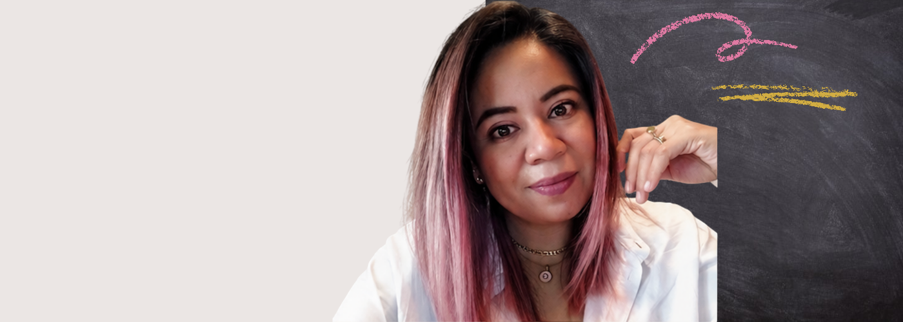

01
GLOBAL
LEARNING
Bringing global and intercultural perspectives into learning across borders and beyond mobility.
GLOBAL LEARNING AND COIL VE CONSULTANT · PROGRAM DESIGNER · EDUCATOR
I design meaningful learning experiences that connect people, ideas, and perspectives across cultures and borders.
EXPLORE +
I believe global learning is not just about going somewhere. It's about finding different perspectives, asking better questions, and learning with people whose experiences may be different from our own.
My work brings together global learning, educational design, faculty development, technology, and human connection to create learning experiences that are meaningful, practical, and inclusive.
curious by nature.
I'm a global learning consultant, program designer, and educator with a background in technology, online education, instructional design, and internationalization.
I've worked across higher education and international education for more than 15 years, including roles at Tecnológico de Monterrey, Florida International University, and the University of Minnesota.
Since 2017, I've focused much of my work on COIL Virtual Exchange and Global Learning, helping educators and institutions create opportunities for students to learn across cultures, contexts, and perspectives.
I'm particularly interested in the space where global learning, meaningful pedagogy, technology, and human connection meet.
Curious by nature.
Connector by practice.
Educator at heart.
Explore my experience in global learning, COIL Virtual Exchange,
online education, program design, and faculty development.
Bringing global and intercultural perspectives into learning across borders and beyond mobility.
Connecting learners and educators through intentional, collaborative online experiences.
Supporting faculty to design, facilitate, and reflect on meaningful learning experiences.
Turning ideas into workshops, programs, courses, resources, and learning experiences.
Through professional development, workshops, COIL
initiatives, and collaborative learning experiences,
I've had the opportunity to work with faculty, and academic leaders from
institutions across regions, disciplines, and cultures.
Conferences, workshops, training programs, and other opportunities where I'll be learning, sharing, and connecting with others in the field.
FACULTY PROFESSIONAL DEVELOPMENT
The TRES Project is an online, synchronous professional learning program designed for
educators and academic leaders who teach and collaborate across cultures.
Grounded in reflection, engagement, and global stewardship, the program helps participants
reimagine learning and collaboration by harnessing diversity as a resource for deeper learning, connection, and innovation.
2026-2027 Concentration Dates
Reflection: October 30, November 6, 13, 20, 2026 (Friday mornings – 11:00 AM EDT / 11:00 AM EST, depending on the date)
Engaging Across Differences: January 22, 29, February 5, 12, 2027 (Friday mornings – 11:00 EST)
Global Stewardship in Course Design:strong> June 4, 11, 18, 25, 2027 (Friday mornings – 11:00 EDT)
CONFERENCE
Sessions and conversations around Collaborative
Online International Learning and Virtual Exchange.
My sessions:
1. Growing Together: the Magic Makers and other Inclusive Networks for COIL Coordinators
2. Play, Think, Connect: Reimagining COIL VE and Student Engagement through Experiential and Story-based Learning
3. Building adaptable recognition frameworks for COIL across institutional and regional contexts
Writing and contributions exploring global learning, international education, collaboration, and meaningful learning experiences.
Here are some resources I've developed to support educators and practitioners in global learning, virtual exchange, and intercultural collaboration.
People · perspectives · ideas · opportunities
Learning experiences with purpose.
Spaces for collaboration and dialogue.
Learn from the experience. Adapt. Try again.
Facilitated COIL Design Workshops for U.S. Department of State–supported initiatives through COIL Connect, supporting faculty from the U.S. and Honduras in a first edition, and from the U.S. and Central America in a second edition.
InternationalAnd many more collaborations, workshops, conversations, and learning experiences along the way.
have an idea?
Whether you're developing a global learning initiative, supporting faculty, designing a new program, building an international partnership, or simply trying to figure out where to start, I'd love to hear about it.
LET'S TALK →